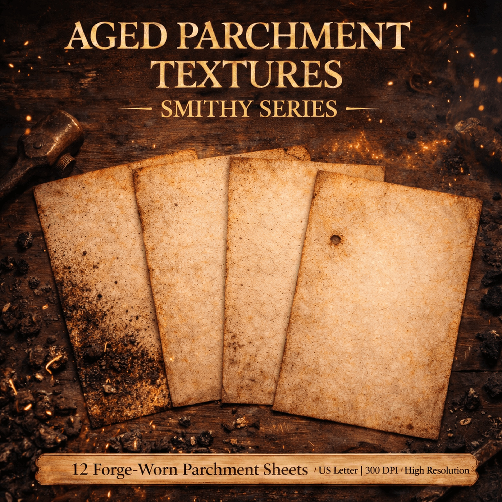

Home / Smithy Textures

Smithy Textures — Forge-Worn Parchment
Current edition • $5 • 12 forge-worn parchment textures
- 12 forge-worn parchment sheets
- 3600 × 5400 px masters at 300 DPI
- Full-bleed artwork with no white canvas edges
- Built for legibility and layered design
- Great for TTRPG handouts, journals, maps, and book pages
- Instant delivery through shop links
Current Etsy edition: 12 JPG parchment textures at 3600 × 5400 px. The gallery below shows the earlier direct-store edition; check the Etsy listing for the files included in the current edition.
Explore the smithy textures
Tap any texture to enlarge it. Every image is a watermarked sample.
Clean, high-resolution originals are provided only with purchase.